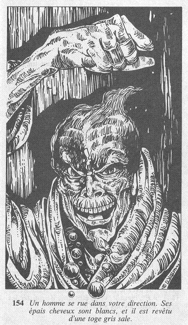

La porte est verrouillée, mais la clef se trouve dans la serrure. Vous la tournez, et vous pénétrez dans une pièce faiblement éclairée par une bougie posée sur une table proche de la fenêtre, à l'opposé de l'endroit où vous vous tenez. Deux caisses retournées font office de chaises, de part et d'autre de la table, et vous ne voyez pas d'autres meubles. Provenant du couloir, le bruit d'une démarche traînante vous fait dresser l'oreille, et vous vous tournez vivement vers la porte. Un cri sonore retentit au-dehors, et la porte qui s'ouvre à la volée laisse passer un homme qui se rue dans votre direction. Ses épais cheveux sont blancs, et il est revêtu d'une longue toge gris sale.

Avant que vous ayez pu esquisser le moindre geste, il est déjà sur vous. Vous ajoutez 1 point à votre total de PEUR, et vous devez combattre cet
| HABILETÉ | ENDURANCE | |
| HOMME AUX CHEVEUX BLANCS | 7 | 9 |